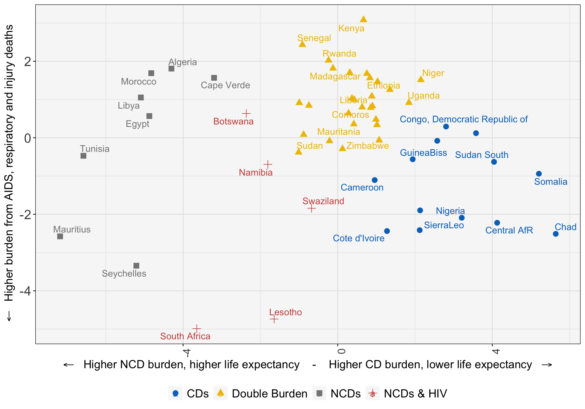

library(tidyverse)
library(factoextra)
library(NbClust)
library(ggsci) #for jco color palette
library(psych) #for PCA
#library(extrafont)
#library(class) #for kNN
#library(caret) #backup kNN function
my.theme <- theme(
plot.title = element_text(color="black", face="plain", size=17, hjust=0),
plot.subtitle = element_text(color="black", size=15, hjust=0),
axis.title = element_text(color="black", face="plain", size=14),
axis.text.y = element_text(size=16),
axis.text.x = element_text(angle = 90, hjust = 1, size=13),
plot.caption = element_text(color="black", size=13),
panel.background = element_rect(fill = "#F7F7F7", colour = NA),
panel.grid.major = element_line(colour = "grey90", linewidth = 0.5),
panel.grid.minor = element_line(colour = "grey93", linewidth = 0.5),
panel.border = element_rect(colour = "black", linewidth = 0.5, fill=NA, linetype = 1),
legend.title=element_blank(),
legend.text = element_text(color="black", size=14, hjust=0),
legend.spacing.x = unit(.5, 'cm'),
legend.position = 'bottom',
strip.text = element_text(color="black", face="plain", size=16),
strip.background = element_rect(fill = "white"))Setup
The dataset contains country-level health outcomes projections from the International Futures model from 2015-2065. For this clustering exercise, I am using the 2019 results.
(df <- readxl::read_xlsx('.//data/cluster_health_afr_14mar2019.xlsx')) # A tibble: 1,080 × 56
variable country dim unit scenario `2015` `2016` `2017` `2018` `2019`
<chr> <chr> <chr> <chr> <chr> <dbl> <dbl> <dbl> <dbl> <dbl>
1 DR_OthCommum… Algeria Total <NA> Base 0.445 0.425 0.41 0.394 0.377
2 DR_MaligNeoPl Algeria Total <NA> Base 0.512 0.517 0.521 0.526 0.531
3 DR_CardioVasc Algeria Total <NA> Base 1.76 1.80 1.83 1.86 1.89
4 DR_Digestive Algeria Total <NA> Base 0.063 0.064 0.064 0.064 0.065
5 DR_Respirato… Algeria Total <NA> Base 0.153 0.157 0.161 0.164 0.168
6 DR_OtherNonC… Algeria Total <NA> Base 0.622 0.618 0.617 0.616 0.614
7 DR_TrafficAcc Algeria Total <NA> Base 0.276 0.28 0.279 0.278 0.278
8 DR_UnIntInj Algeria Total <NA> Base 0.146 0.146 0.148 0.149 0.15
9 DR_IntInj Algeria Total <NA> Base 0.053 0.053 0.053 0.053 0.053
10 DR_Diabetes Algeria Total <NA> Base 0.214 0.218 0.223 0.229 0.234
# ℹ 1,070 more rows
# ℹ 46 more variables: `2020` <dbl>, `2021` <dbl>, `2022` <dbl>, `2023` <dbl>,
# `2024` <dbl>, `2025` <dbl>, `2026` <dbl>, `2027` <dbl>, `2028` <dbl>,
# `2029` <dbl>, `2030` <dbl>, `2031` <dbl>, `2032` <dbl>, `2033` <dbl>,
# `2034` <dbl>, `2035` <dbl>, `2036` <dbl>, `2037` <dbl>, `2038` <dbl>,
# `2039` <dbl>, `2040` <dbl>, `2041` <dbl>, `2042` <dbl>, `2043` <dbl>,
# `2044` <dbl>, `2045` <dbl>, `2046` <dbl>, `2047` <dbl>, `2048` <dbl>, …# A tibble: 20 × 1
variable
<chr>
1 DR_OthCommumDis
2 DR_MaligNeoPl
3 DR_CardioVasc
4 DR_Digestive
5 DR_Respiratory
6 DR_OtherNonComm
7 DR_TrafficAcc
8 DR_UnIntInj
9 DR_IntInj
10 DR_Diabetes
11 DR_AIDS
12 DR_Diarrhea
13 DR_Malaria
14 DR_RespInfec
15 DR_MentalHealth
16 CLPC
17 HLSTUNT
18 HLSMOKING
19 INFMOR
20 MATMORTRATIO (df <- df %>%
#pivot data
gather(year, val, 6:56) %>%
#filter on 2019 results
filter(year == '2019') %>%
#select variable, country, and val
select(1:2, 7) %>%
#group by variable and generate z-score for clustering
group_by(variable) %>%
mutate(val = scale(val)) %>%
ungroup() %>%
spread(variable, val)) # A tibble: 54 × 21
country CLPC DR_AIDS DR_CardioVasc DR_Diabetes DR_Diarrhea DR_Digestive
<chr> <dbl> <dbl> <dbl> <dbl> <dbl> <dbl>
1 Algeria 1.63 -0.948 1.19 0.102 -1.42 -1.95
2 Angola -0.0927 -0.427 -0.951 -0.510 1.10 0.443
3 Benin 0.609 -0.610 -0.427 -0.385 0.815 0.0179
4 Botswana -0.846 1.68 -0.224 0.835 -0.601 -1.28
5 Burkina F… 0.821 -0.709 -0.624 -0.471 -0.0198 0.307
6 Burundi -1.41 -0.636 -0.777 -0.436 2.16 0.597
7 Cameroon 0.821 0.663 -0.513 -0.178 -0.117 0.346
8 Cape Verde -0.494 -0.637 0.788 0.0205 -1.30 -1.62
9 Central A… -1.29 0.902 0.166 -0.367 1.56 1.81
10 Chad -0.887 -0.621 -0.466 -0.428 3.26 1.48
# ℹ 44 more rows
# ℹ 14 more variables: DR_IntInj <dbl>, DR_Malaria <dbl>, DR_MaligNeoPl <dbl>,
# DR_MentalHealth <dbl>, DR_OthCommumDis <dbl>, DR_OtherNonComm <dbl>,
# DR_RespInfec <dbl>, DR_Respiratory <dbl>, DR_TrafficAcc <dbl>,
# DR_UnIntInj <dbl>, HLSMOKING <dbl>, HLSTUNT <dbl>, INFMOR <dbl>,
# MATMORTRATIO <dbl>Clustering
The NbClust:: package has a handy function for evaluating possible cluster counts on the data
(nbclust_eval <- NbClust(df %>% select(-1),
min.nc = 3,
max.nc = 10,
method = "complete",
index = "all"))*** : The Hubert index is a graphical method of determining the number of clusters.
In the plot of Hubert index, we seek a significant knee that corresponds to a
significant increase of the value of the measure i.e the significant peak in Hubert
index second differences plot.
*** : The D index is a graphical method of determining the number of clusters.
In the plot of D index, we seek a significant knee (the significant peak in Dindex
second differences plot) that corresponds to a significant increase of the value of
the measure.
*******************************************************************
* Among all indices:
* 3 proposed 3 as the best number of clusters
* 11 proposed 4 as the best number of clusters
* 2 proposed 5 as the best number of clusters
* 6 proposed 9 as the best number of clusters
* 1 proposed 10 as the best number of clusters
***** Conclusion *****
* According to the majority rule, the best number of clusters is 4
******************************************************************* $All.index
KL CH Hartigan CCC Scott Marriot TrCovW TraceW
3 1.3365 15.6335 9.0320 -1.3602 214.1099 8.111701e+24 2246.2694 657.1279
4 2.7577 14.9792 3.9393 -0.6230 307.6816 2.549409e+24 1408.7282 558.2614
5 1.2066 12.8423 3.2841 -1.1342 470.0117 1.971161e+23 1269.7717 517.4901
6 0.6502 11.3821 4.6089 -1.6222 529.4997 9.433051e+22 1099.7727 484.9854
7 1.1310 10.9314 4.2211 -1.3236 608.3339 2.982103e+22 949.7958 442.4974
8 1.2908 10.5842 3.4306 -1.0429 721.2091 4.816247e+21 829.7843 406.0318
9 0.6574 10.1550 5.2118 -1.0709 804.4149 1.305667e+21 734.2950 377.8525
10 1.0994 10.4145 5.0686 -0.3855 877.9289 4.131537e+20 587.3426 338.6329
Friedman Rubin Cindex DB Silhouette Duda Pseudot2 Beale Ratkowsky
3 77.4165 1.6131 0.3862 1.5630 0.2204 0.7517 10.9011 4.4671 0.3345
4 91.5396 1.8988 0.4183 1.3010 0.2417 1.3728 -1.3578 -3.1530 0.3354
5 129.9878 2.0483 0.4345 1.1117 0.2594 0.7780 2.8542 3.6152 0.3124
6 138.8076 2.1856 0.4372 1.1590 0.2306 1.5606 -1.4368 -4.0037 0.2945
7 151.7404 2.3955 0.4470 0.9928 0.2517 1.1591 -4.2540 -1.8522 0.2838
8 165.8865 2.6106 0.4771 0.9086 0.2769 1.0077 -0.0611 -0.0946 0.2745
9 187.7532 2.8053 0.5062 0.8398 0.2872 0.8459 5.4657 2.4565 0.2650
10 204.8779 3.1302 0.5065 1.0891 0.2166 0.6590 5.1736 6.5529 0.2587
Ball Ptbiserial Frey McClain Dunn Hubert SDindex Dindex SDbw
3 219.0426 0.5310 -0.2141 0.7172 0.2485 0.0033 1.3456 3.2549 0.9642
4 139.5653 0.6220 -0.1200 0.7867 0.2941 0.0037 1.0579 3.0335 0.7583
5 103.4980 0.6294 0.5894 0.7934 0.2943 0.0038 0.9281 2.9045 0.5488
6 80.8309 0.6312 -0.0791 0.8332 0.3004 0.0040 1.0086 2.8171 0.5427
7 63.2139 0.6369 0.0900 0.8393 0.3087 0.0040 0.8304 2.6765 0.3744
8 50.7540 0.6600 0.2276 0.8894 0.3411 0.0040 0.7780 2.5601 0.3213
9 41.9836 0.6640 2.1692 0.9058 0.3628 0.0040 0.7195 2.4562 0.2669
10 33.8633 0.5024 0.2534 2.0917 0.2558 0.0043 1.0667 2.3387 0.2832
$All.CriticalValues
CritValue_Duda CritValue_PseudoT2 Fvalue_Beale
3 0.8006 8.2179 0e+00
4 0.5935 3.4242 1e+00
5 0.6820 4.6621 0e+00
6 0.5635 3.0984 1e+00
7 0.7956 7.9633 1e+00
8 0.6547 4.2190 1e+00
9 0.7929 7.8336 4e-04
10 0.6820 4.6621 0e+00
$Best.nc
KL CH Hartigan CCC Scott Marriot TrCovW
Number_clusters 4.0000 3.0000 4.0000 10.0000 5.00 4.000000e+00 4.0000
Value_Index 2.7577 15.6335 5.0926 -0.3855 162.33 3.209998e+24 837.5411
TraceW Friedman Rubin Cindex DB Silhouette Duda
Number_clusters 4.0000 5.0000 4.0000 3.0000 9.0000 9.0000 4.0000
Value_Index 58.0952 38.4482 -0.1361 0.3862 0.8398 0.2872 1.3728
PseudoT2 Beale Ratkowsky Ball PtBiserial Frey McClain
Number_clusters 4.0000 4.000 4.0000 4.0000 9.000 2 3.0000
Value_Index -1.3578 -3.153 0.3354 79.4773 0.664 NA 0.7172
Dunn Hubert SDindex Dindex SDbw
Number_clusters 9.0000 0 9.0000 0 9.0000
Value_Index 0.3628 0 0.7195 0 0.2669
$Best.partition
[1] 1 2 3 3 3 2 3 3 2 2 3 2 3 2 3 1 2 3 3 3 3 3 3 2 3 4 3 1 3 3 3 3 1 1 3 3 3 2
[39] 3 3 3 1 2 2 4 3 2 3 3 3 1 3 3 3This function evaluates 23 heuristics for choosing the cluster amount, and recommends the best number to use based on the count that the most tests recommend. In this case, four clusters is recommended by the largest number of heuristics.
The elbow plot of four clusters supports this recommendation.
fviz_nbclust(df %>% select(-1), FUNcluster = kmeans, method='wss')set.seed(1234)
(kmeans_sdg3 <- kmeans(df %>% select(-c(1)), 4))K-means clustering with 4 clusters of sizes 8, 5, 28, 13
Cluster means:
CLPC DR_AIDS DR_CardioVasc DR_Diabetes DR_Diarrhea DR_Digestive
1 1.3482246 -0.79633839 1.8607456 0.8648762 -1.36671009 -1.18128326
2 -0.4612575 2.01614378 0.2989428 1.3413175 -0.11916515 -0.55733621
3 -0.1630247 -0.17010246 -0.4334196 -0.3474342 -0.05180124 0.01649377
4 -0.3011397 0.08098901 -0.3265331 -0.2998032 0.99845702 0.90577858
DR_IntInj DR_Malaria DR_MaligNeoPl DR_MentalHealth DR_OthCommumDis
1 -0.54678017 -0.78068551 1.1131725 1.9150416 -1.40760552
2 2.41728180 -0.76340618 0.2580764 0.5803655 -0.53716577
3 -0.24010893 -0.05144041 -0.2683869 -0.4630447 -0.08905388
4 -0.07608597 0.88483434 -0.2062252 -0.4043776 1.26462935
DR_OtherNonComm DR_RespInfec DR_Respiratory DR_TrafficAcc DR_UnIntInj
1 0.5193418 -1.3234956 0.5339725 0.03751842 -1.46175497
2 -0.6326953 -0.2327741 1.9103998 0.90293248 -0.59792256
3 -0.2793787 -0.1522466 -0.3965467 -0.37603897 -0.09880806
4 0.5254881 1.2319032 -0.2092669 0.43956011 1.34232910
HLSMOKING HLSTUNT INFMOR MATMORTRATIO
1 1.0551313 -0.8965578 -1.56432785 -1.38933306
2 0.7019074 -0.6175282 -0.42921357 -0.56210398
3 -0.3503515 0.1909051 -0.08039168 -0.02551253
4 -0.1646727 0.3780585 1.30089675 1.12611809
Clustering vector:
[1] 1 4 3 2 3 4 4 1 4 4 3 4 3 4 3 1 4 3 3 3 3 3 3 4 3 2 3 1 3 3 3 3 1 1 3 2 3 4
[39] 3 3 3 1 4 4 2 3 4 2 3 3 1 3 3 3
Within cluster sum of squares by cluster:
[1] 131.30665 49.14012 207.32777 155.21550
(between_SS / total_SS = 48.8 %)
Available components:
[1] "cluster" "centers" "totss" "withinss" "tot.withinss"
[6] "betweenss" "size" "iter" "ifault" Wrangling cluster results
(df_cluster_4_results <- kmeans_sdg3 %>%
#broom to pull the cluster into the dataframe
broom::augment(df) %>%
ungroup() %>%
select(.cluster, everything()) %>%
mutate(.cluster = as.character(.cluster)))# A tibble: 54 × 22
.cluster country CLPC DR_AIDS DR_CardioVasc DR_Diabetes DR_Diarrhea
<chr> <chr> <dbl> <dbl> <dbl> <dbl> <dbl>
1 1 Algeria 1.63 -0.948 1.19 0.102 -1.42
2 4 Angola -0.0927 -0.427 -0.951 -0.510 1.10
3 3 Benin 0.609 -0.610 -0.427 -0.385 0.815
4 2 Botswana -0.846 1.68 -0.224 0.835 -0.601
5 3 Burkina Faso 0.821 -0.709 -0.624 -0.471 -0.0198
6 4 Burundi -1.41 -0.636 -0.777 -0.436 2.16
7 4 Cameroon 0.821 0.663 -0.513 -0.178 -0.117
8 1 Cape Verde -0.494 -0.637 0.788 0.0205 -1.30
9 4 Central AfR -1.29 0.902 0.166 -0.367 1.56
10 4 Chad -0.887 -0.621 -0.466 -0.428 3.26
# ℹ 44 more rows
# ℹ 15 more variables: DR_Digestive <dbl>, DR_IntInj <dbl>, DR_Malaria <dbl>,
# DR_MaligNeoPl <dbl>, DR_MentalHealth <dbl>, DR_OthCommumDis <dbl>,
# DR_OtherNonComm <dbl>, DR_RespInfec <dbl>, DR_Respiratory <dbl>,
# DR_TrafficAcc <dbl>, DR_UnIntInj <dbl>, HLSMOKING <dbl>, HLSTUNT <dbl>,
# INFMOR <dbl>, MATMORTRATIO <dbl>Rows: 159 Columns: 3
── Column specification ────────────────────────────────────────────────────────
Delimiter: ","
chr (3): type, country, group
ℹ Use `spec()` to retrieve the full column specification for this data.
ℹ Specify the column types or set `show_col_types = FALSE` to quiet this message.# A tibble: 54 × 3
type country group
<chr> <chr> <chr>
1 Regional Cameroon Cenral Africa
2 Regional Central AfR Cenral Africa
3 Regional Chad Cenral Africa
4 Regional Congo, Democratic Republic of Cenral Africa
5 Regional Congo, Republic of Cenral Africa
6 Regional Equa Guinea Cenral Africa
7 Regional Gabon Cenral Africa
8 Regional Sao Tome and Principe Cenral Africa
9 Regional Burundi East Africa
10 Regional Comoros East Africa
# ℹ 44 more rows# A tibble: 54 × 23
.cluster country group CLPC DR_AIDS DR_CardioVasc DR_Diabetes DR_Diarrhea
<chr> <chr> <chr> <dbl> <dbl> <dbl> <dbl> <dbl>
1 1 Algeria Nort… 1.63 -0.948 1.19 0.102 -1.42
2 4 Angola Sout… -0.0927 -0.427 -0.951 -0.510 1.10
3 3 Benin West… 0.609 -0.610 -0.427 -0.385 0.815
4 2 Botswana Sout… -0.846 1.68 -0.224 0.835 -0.601
5 3 Burkina… West… 0.821 -0.709 -0.624 -0.471 -0.0198
6 4 Burundi East… -1.41 -0.636 -0.777 -0.436 2.16
7 4 Cameroon Cenr… 0.821 0.663 -0.513 -0.178 -0.117
8 1 Cape Ve… West… -0.494 -0.637 0.788 0.0205 -1.30
9 4 Central… Cenr… -1.29 0.902 0.166 -0.367 1.56
10 4 Chad Cenr… -0.887 -0.621 -0.466 -0.428 3.26
# ℹ 44 more rows
# ℹ 15 more variables: DR_Digestive <dbl>, DR_IntInj <dbl>, DR_Malaria <dbl>,
# DR_MaligNeoPl <dbl>, DR_MentalHealth <dbl>, DR_OthCommumDis <dbl>,
# DR_OtherNonComm <dbl>, DR_RespInfec <dbl>, DR_Respiratory <dbl>,
# DR_TrafficAcc <dbl>, DR_UnIntInj <dbl>, HLSMOKING <dbl>, HLSTUNT <dbl>,
# INFMOR <dbl>, MATMORTRATIO <dbl>Analysis of results
First, I’ll use the fiz_cluster() function to visualize cluster membership. (There’s further clean-up needed, but I want to see the initial viz).
(kmeans_viz <- fviz_cluster(kmeans_sdg3,
data=df %>% select(-1),
stand = FALSE,
ellipse.type = "convex",
palette = "jco") +
my.theme)
What do each of these clusters mean? What do they represent?
cluster_fill <- c("#868686FF", "#CD534CFF", "#EFC000FF", "#0073C2FF")
df_cluster_4_results %>%
gather(variable, val, 4:23) %>%
filter(variable %in% spot_vars) %>%
mutate(variable = recode(variable,
'DR_AIDS' = 'AIDS death rate',
'DR_CardioVasc' = 'Cardiovascular death rate',
'MATMORTRATIO' = 'Maternal mortality rate',
'DR_Respiratory' = 'Respiratory mortality rate',
'HLSTUNT' = 'Stunting rate',
'DR_IntInj' = 'Intentional injury death rate',
'DR_Malaria' = 'Malaria death rate',
'DR_Diabetes' = 'Diabetes death rate'),
clust_name = case_when(.cluster == '1' ~ 'CDs',
.cluster == '2' ~ 'NCDs',
.cluster == '3' ~ 'NCDs & HIV',
.cluster == '4' ~ 'Double Burden')) %>%
ggplot(.,
aes(x=.cluster,
y=val,
fill=.cluster)) +
geom_violin() +
geom_jitter(width = .2, height = .1) +
facet_wrap(~variable,
nrow = 2,
scales = 'free',
labeller = label_wrap_gen()) +
ggtitle('',
subtitle = 'Each dot represents an African country within its cluster') +
labs(y='z-score',
x='Cluster') +
my.theme +
scale_fill_manual(values = cluster_fill) +
theme(strip.text = element_text(size = 12),
strip.text.x = element_text(margin = margin(.25,0,.25,0, "cm")),
legend.position = 'none')Cluster 1: Higher levels of non-communicable disease reflecting higher development.
Cluster 2: Highest burdens of HIV/AIDS, diabetes, respiratory illnesses, traffic fatalities, and deaths from intentional injuries.
Cluster 3: Countries in the middle of the “double burden” of disease, with elevated (but generally falling) burden of communicable disease and rising burdens from non-communicable disease.
Cluster 4: Communicable disease mortality characterizes these countries. Countries in this cluster are at the beginning of development towards the “double burden” of disease.
Some quick clean-up to support putting labels on the cluster graphic.
(df_label_help <- df %>%
select(1) %>%
rownames_to_column())# A tibble: 54 × 2
rowname country
<chr> <chr>
1 1 Algeria
2 2 Angola
3 3 Benin
4 4 Botswana
5 5 Burkina Faso
6 6 Burundi
7 7 Cameroon
8 8 Cape Verde
9 9 Central AfR
10 10 Chad
# ℹ 44 more rows name x y coord cluster
1 1 -4.3024636 1.80865284 21.78241826 1
2 2 2.5755214 -0.07889390 6.63953471 4
3 3 1.0169684 0.33706615 1.14783841 3
4 4 -2.3642511 0.63494494 5.99283814 2
5 5 0.8993824 0.82947169 1.49691205 3
6 6 3.5790154 0.12038452 12.82384342 4
7 7 0.9569876 -1.10554744 2.13806044 4
8 8 -3.1992280 1.56693482 12.69034466 1
9 9 4.1259704 -2.22199890 21.96091056 4
10 10 5.6425998 -2.51144500 38.14628795 4
11 11 0.6317898 0.79935106 1.03812047 3
12 12 2.8034932 0.29375838 7.94586811 4
13 13 0.3687783 1.02798718 1.19275508 3
14 14 1.2758298 -2.43850287 7.57403791 4
15 15 -0.2122328 -0.08452750 0.05218765 3
16 16 -4.8746473 0.56767475 24.08444092 1
17 17 2.1326087 -1.89742082 8.14822560 4
18 18 1.0316133 1.46454137 3.20910741 3
19 19 0.8334748 1.56408985 3.14105736 3
20 20 -0.8819849 0.08342655 0.78485739 3
21 21 0.4273448 0.99698232 1.17659728 3
22 22 -0.7456978 0.84322822 1.26709904 3
23 23 1.0721493 -0.06478235 1.15370079 3
24 24 1.9407232 -0.56190798 4.08214716 4
25 25 0.6686306 3.08182329 9.94470168 3
26 26 -1.6442519 -4.73840005 25.15599931 2
27 27 0.8823869 1.08552443 1.95696991 3
28 28 -5.0939159 1.05318693 27.05718209 1
29 29 -0.1219820 1.81595847 3.31258478 3
30 30 0.7539831 1.67684599 3.38030304 3
31 31 0.9899307 0.48061503 1.21095368 3
32 32 0.4174827 0.35810341 0.30252987 3
33 33 -7.1835908 -2.57711364 58.24549129 1
34 34 -4.8250325 1.68917653 26.13425564 1
35 35 0.8549720 0.78819666 1.35223117 3
36 36 -1.8082677 -0.69571408 3.75385013 2
37 37 2.1517074 1.51364425 6.92096363 3
38 38 3.2091357 -2.09075227 14.66979676 4
39 39 -0.2361615 2.02429432 4.15353976 3
40 40 -0.9941374 0.91320146 1.82224606 3
41 41 -0.9138675 2.43145802 6.74714196 3
42 42 -5.2103788 -3.34420231 38.33173673 1
43 43 2.1218142 -2.41530504 10.33579390 4
44 44 5.2056186 -0.93944297 27.98101823 4
45 45 -3.6462041 -4.98956383 38.19055169 2
46 46 -1.0108568 -0.38050415 1.16661488 3
47 47 4.0455876 -0.62946960 16.76301062 4
48 48 -0.6776526 -1.84331557 3.85702536 2
49 49 0.3131814 1.70183621 2.99432904 3
50 50 0.2815917 0.64157101 0.49090723 3
51 51 -6.5797150 -0.47025448 43.51378831 1
52 52 1.8420731 0.91715107 4.23439936 3
53 53 1.3506020 1.25844087 3.40779929 3
54 54 0.1235718 -0.29045781 0.09963573 3
country
1 Algeria
2 Angola
3 Benin
4 Botswana
5 Burkina Faso
6 Burundi
7 Cameroon
8 Cape Verde
9 Central AfR
10 Chad
11 Comoros
12 Congo, Democratic Republic of
13 Congo, Republic of
14 Cote d'Ivoire
15 Djibouti
16 Egypt
17 Equa Guinea
18 Eritrea
19 Ethiopia
20 Gabon
21 Gambia
22 Ghana
23 Guinea
24 GuineaBiss
25 Kenya
26 Lesotho
27 Liberia
28 Libya
29 Madagascar
30 Malawi
31 Mali
32 Mauritania
33 Mauritius
34 Morocco
35 Mozambique
36 Namibia
37 Niger
38 Nigeria
39 Rwanda
40 Sao Tome and Principe
41 Senegal
42 Seychelles
43 SierraLeo
44 Somalia
45 South Africa
46 Sudan
47 Sudan South
48 Swaziland
49 Tanzania
50 Togo
51 Tunisia
52 Uganda
53 Zambia
54 Zimbabwe name x y coord cluster
1 1 -4.3024636 1.80865284 21.78241826 1
2 2 2.5755214 -0.07889390 6.63953471 4
3 3 1.0169684 0.33706615 1.14783841 3
4 4 -2.3642511 0.63494494 5.99283814 2
5 5 0.8993824 0.82947169 1.49691205 3
6 6 3.5790154 0.12038452 12.82384342 4
7 7 0.9569876 -1.10554744 2.13806044 4
8 8 -3.1992280 1.56693482 12.69034466 1
9 9 4.1259704 -2.22199890 21.96091056 4
10 10 5.6425998 -2.51144500 38.14628795 4
11 11 0.6317898 0.79935106 1.03812047 3
12 12 2.8034932 0.29375838 7.94586811 4
13 13 0.3687783 1.02798718 1.19275508 3
14 14 1.2758298 -2.43850287 7.57403791 4
15 15 -0.2122328 -0.08452750 0.05218765 3
16 16 -4.8746473 0.56767475 24.08444092 1
17 17 2.1326087 -1.89742082 8.14822560 4
18 18 1.0316133 1.46454137 3.20910741 3
19 19 0.8334748 1.56408985 3.14105736 3
20 20 -0.8819849 0.08342655 0.78485739 3
21 21 0.4273448 0.99698232 1.17659728 3
22 22 -0.7456978 0.84322822 1.26709904 3
23 23 1.0721493 -0.06478235 1.15370079 3
24 24 1.9407232 -0.56190798 4.08214716 4
25 25 0.6686306 3.08182329 9.94470168 3
26 26 -1.6442519 -4.73840005 25.15599931 2
27 27 0.8823869 1.08552443 1.95696991 3
28 28 -5.0939159 1.05318693 27.05718209 1
29 29 -0.1219820 1.81595847 3.31258478 3
30 30 0.7539831 1.67684599 3.38030304 3
31 31 0.9899307 0.48061503 1.21095368 3
32 32 0.4174827 0.35810341 0.30252987 3
33 33 -7.1835908 -2.57711364 58.24549129 1
34 34 -4.8250325 1.68917653 26.13425564 1
35 35 0.8549720 0.78819666 1.35223117 3
36 36 -1.8082677 -0.69571408 3.75385013 2
37 37 2.1517074 1.51364425 6.92096363 3
38 38 3.2091357 -2.09075227 14.66979676 4
39 39 -0.2361615 2.02429432 4.15353976 3
40 40 -0.9941374 0.91320146 1.82224606 3
41 41 -0.9138675 2.43145802 6.74714196 3
42 42 -5.2103788 -3.34420231 38.33173673 1
43 43 2.1218142 -2.41530504 10.33579390 4
44 44 5.2056186 -0.93944297 27.98101823 4
45 45 -3.6462041 -4.98956383 38.19055169 2
46 46 -1.0108568 -0.38050415 1.16661488 3
47 47 4.0455876 -0.62946960 16.76301062 4
48 48 -0.6776526 -1.84331557 3.85702536 2
49 49 0.3131814 1.70183621 2.99432904 3
50 50 0.2815917 0.64157101 0.49090723 3
51 51 -6.5797150 -0.47025448 43.51378831 1
52 52 1.8420731 0.91715107 4.23439936 3
53 53 1.3506020 1.25844087 3.40779929 3
54 54 0.1235718 -0.29045781 0.09963573 3
country clust_name africa
1 Algeria NCDs 1
2 Angola CDs 1
3 Benin Double Burden 1
4 Botswana NCDs & HIV 1
5 Burkina Faso Double Burden 1
6 Burundi CDs 1
7 Cameroon CDs 1
8 Cape Verde NCDs 1
9 Central AfR CDs 1
10 Chad CDs 1
11 Comoros Double Burden 1
12 Congo, Democratic Republic of CDs 1
13 Congo, Republic of Double Burden 1
14 Cote d'Ivoire CDs 1
15 Djibouti Double Burden 1
16 Egypt NCDs 1
17 Equa Guinea CDs 1
18 Eritrea Double Burden 1
19 Ethiopia Double Burden 1
20 Gabon Double Burden 1
21 Gambia Double Burden 1
22 Ghana Double Burden 1
23 Guinea Double Burden 1
24 GuineaBiss CDs 1
25 Kenya Double Burden 1
26 Lesotho NCDs & HIV 1
27 Liberia Double Burden 1
28 Libya NCDs 1
29 Madagascar Double Burden 1
30 Malawi Double Burden 1
31 Mali Double Burden 1
32 Mauritania Double Burden 1
33 Mauritius NCDs 1
34 Morocco NCDs 1
35 Mozambique Double Burden 1
36 Namibia NCDs & HIV 1
37 Niger Double Burden 1
38 Nigeria CDs 1
39 Rwanda Double Burden 1
40 Sao Tome and Principe Double Burden 1
41 Senegal Double Burden 1
42 Seychelles NCDs 1
43 SierraLeo CDs 1
44 Somalia CDs 1
45 South Africa NCDs & HIV 1
46 Sudan Double Burden 1
47 Sudan South CDs 1
48 Swaziland NCDs & HIV 1
49 Tanzania Double Burden 1
50 Togo Double Burden 1
51 Tunisia NCDs 1
52 Uganda Double Burden 1
53 Zambia Double Burden 1
54 Zimbabwe Double Burden 1kmeans_viz_data %>%
ggplot(aes(x=x,
y=y,
color=clust_name,
shape=clust_name)) +
geom_point(size=3) +
ggrepel::geom_text_repel(data=. %>% filter(country %in% spotlight),
aes(label = country), force = 10, size=4) +
#ggtitle('K-means') +
labs(x=expression('' %<-% ' Higher NCD burden, higher life expectancy - Higher CD burden, lower life expectancy ' %->% ''),
y=expression('' %<-% ' Higher burden from AIDS, respiratory and injury deaths')) +
scale_color_jco() +
my.theme